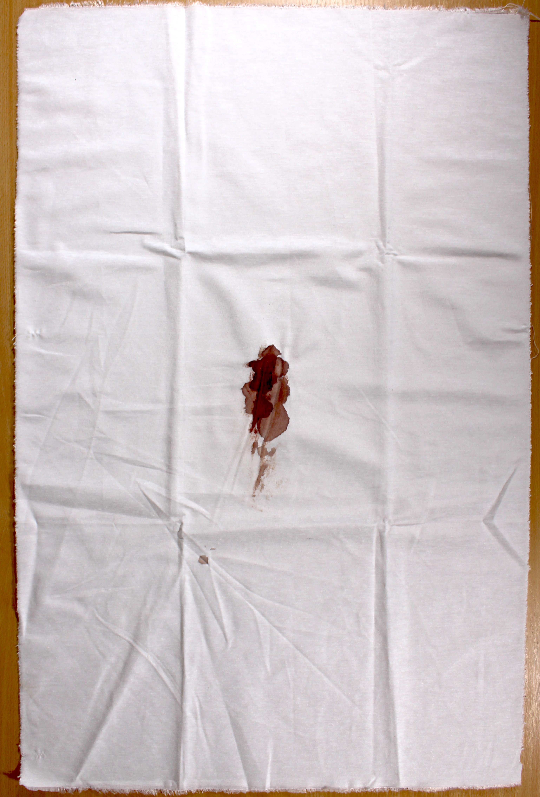

The Artists
Sonya Bogdanova
United States of America
Born in Moscow in 1991, Sonya Bogdanova is a Chicago-based artist and educator working with sculpture, painting, and performance. Her practice links materialism and esotericism to objectify representations of ruling classes. Centered on the desire for another way out, she explores how the path through horror enables action. Bogdanova holds an MFA in Studio Arts from the University of Illinois at Chicago. Selected exhibitions include Ignition Projects (Chicago), Co-Prosperity Sphere (Chi), and Flatland (Chi). Bogdanova received the Art Department Scholarship from UIC (2019-2021). She was an artist-in-residence at Holly & the Neighbors in 2021 and at Jiwar Foundation in Barcelona in 2015


Tania Lombeida Miño
Ecuador
Tania Lombeida Miño (1980)
Multidisciplinary artists, she completed a Masters in Artistic Creation: Contemporary Realisms and Treatment of Environments, at the University of Barcelona. She graduated in Fine Arts at the Universidad Central del Ecuador, and in Restauration and Museum Studies at the Universidad Tecnológica Equinoccial. She co-funded the art collective La Emancipada, with which she manages the Annual Meeting for Arte Mujeres Ecuador (AME). She also manages the project ARCHIVAS & DOCUMENTAS_Mujeres, Arte & Visualidades Ecuador (Archives & Documents_Women, Art & Visibilities Ecuador) – an online data base about women artists and their work in the art systems. She worked as a consultant for the Organization of Ibero-American States (OEI) alongside MERCOSUR and the Argentinian Ministry of Culture, for the project Mapa de Residencias Artísticas del Mercosur (2017).
In 2013 she was awarded an academic grant by the Ecuadorian government to continue her postgraduate studies in art. She has been awarded the Grant Fund for Art and Culture Projects by the Ministry of Culture and Heritage of Ecuador (both for individual and collective projects) in 2008, 2016, and 2017.
Her published work includes: “Case of Study: Ecuadorian Women’s Art Venue” in Feminism and Museums vol 1 (2017); Archivas & Documentas: un espacio de enunciación para las mujeres artistas in Zoila (2018). ”Ecuador la Tierra y el Oro. Visualidades en resistencia: contacto-transferencia-interpretación de la cobertura mediática 1990-2014”, University of Barcelona (2014),
Her work has been displayed in various museums, cultural centres, and galleries in Ecuador and abroad (Germany, Venezuela, Spain).

Lu Mason
United Kingdom
Lu Mason: I have been making mobiles out of cut paper, and putting up paper installations for ten years. I have focused on putting my work in public spaces, rather than galleries. I have been working specifically with perspex for five years, and am drawn to the way that light passes through the tinted shapes. The movement of shapes, the patterns they form, and the shadows they cast are very much part of what I am interested in. I am self taught. I work with a group of artists in York; our workspace is called Pica Studios. I enjoy the exchange of ideas and methods that come with sharing studio space.


Lesley Birch
United Kingdom
Lesley Birch was born in Glasgow in 1958 and has an MA in English Literature and Music.
She was a professional musician for some years before embracing her art
practice and studying printmaking at Harrogate College. She exhibits widely and has
shown and sold in the Royal Academy and the Mall Galleries. Her paintings are most often a
response to time and place, where she is interested in the power of paint
and mark-making to evoke an emotional response. Work in this exhibition is inspired by
Sassoferrato’s ‘Madonna at Prayer' in the National Gallery, London. www.lesleybirchart.com

Celia Martínez
Spain
Celia Martínez
Satanic feminist. Lover of typography. Book collector. Graphic designer lost in the landscape of the word.


Maria Amparo Gomar Vidal
Spain
Maria Amparo Gomar Vidal (1983, València, Spain) studied painting at the Sant Carles Visual Arts college at the Universitat Politècnica de València. Afterwards she continued her artistic development at the Continuing Education program at the New York School of Visual Arts. In Berlin, she took a masters in Art in Context at the Universität der Künste. At the centre of her artistic motivations we find issues surrounding identity, memory, and believe. She currently lives and works in Berlin. 
Silvia Martínez Cano
Spain
Silvia Martínez Cano is a multidisciplinary artist. She holds a doctorate in Education, she is a Conservator Restorer of Cultural Goods (BBAA), holds a masters in Visual Arts and Education, she is an Architectural Technologist, and holds a degree in Fundamental Theology. In the arts, with her work she investigates from a triple perspective: women, education, and theology. She has regularly displayed her work in collective exhibitions since 2007, in cities such as Logroño, Madrid, Ávila, Valencia, Vitoria, Cáceres, Badajoz, and San Sebastián. She is part of a research group working on Art and Theology at the University of Winchester, at which she exhibits her work annually (20th of June to 20th of July 2019). She was awarded the National Prize by la Fundación Santa María for her Educational Simulation Games (1994), and the photography prize MAV & MÍA 2013. She is a member of the association Mujeres en las Artes Visuales (Women in the Visual Arts) since 2012, and a member of the EmpoderArte collective since 2013. Currently she works at the Universidad Pontificia de Comillas (SPAIN) as a lecturer in Theology. She is the current president of the Asociación de Teólogas Españolas (Asociation of Spanish Female Theologians).


Victoria Inglés
Spain
Hi! I’m Victoria Inglés, illustrator and graphic designer. I graduated in Fine Arts at the Universidad de Salamanca. I have always spent my time among pencils and brushes, I specialise in children’s illustration and hold a degree in it from ESDIP Madrid, and a postgraduate degree from BAU Design College of Barcelona. I’m a story teller and a creator of imaginary worlds, I’m always a bit in the clouds and now I’m doing what I enjoy the most. I illustrate a bit of everythig and I don’t stick to one style, because I like changing and I believe change is always good, so you’ll never see the same thing twice in my drawings.
Gabriela Corradini
Spain
Gabriela Corradini
Illustrator and graphic designer. I grew up in Asturias, Spain, and I trained as an illustrator and graphic designer in Barcelona. I started drawing from a very young age, someone gave me paper and pen so I would sit still for a moment and I ended up liking it. So, over the years, I got interested in it and it became part of my work, my way of killing time and sometimes my way to let off steam.

Fco Amezaga "Sr calavera"
Mexico
Fco Amezaga "Sr calavera"
Mexico 1980
CD Obregón, Sonora, Mexico
Visual Artist & Set Designer
Multidisciplinary artist, he uses a variety of expressive artistic techniques and materials in his work, including illustration, painting, sculpture, engraving, and tattoo.
His work is centred around the theme of skulls, death, and the Day of the Dead, adapting it to various symbols of Mexican folklore and of Mexico’s various indigenous ethnicities, including dances, festivities, religion, masks, and characters typical of Mexican culture.
@Sr_francisco_calavera


Pamela Pazmiño
Ecuador
Pamela Pazmiño
Born in 1984, lives and works in Quito, Ecuador.
She graduated in Visual Arts from the Universidad Central del Ecuador, with a special mention in painting and engraving. She studied Technology in Graphic Design in Multimedia at the Instituto de Artes Visuales Quito, and higher education specialistion in Education and Information and Communication Tecnology at the Universidad Andina Simón Bolívar . She has a Master degree in Research in Visual Artistic Practices from the Universidad Castilla - La Mancha.
She is a co-founder of the visual arts collective La Emancipada since 2009, and has participated in collective exhibitions, and acting poducer for the annual meetings of the Arte Mujeres Ecuador since its first edition in 2012.
Her work has been displayed in various galleries and museums in Ecudor, Italy, Cuba, and the USA. In 2006 she received first prize at the Salón de Arte Contemporáneo: Mariano Aguilera, and second prize at the Bienal de Grabado: La estampa Joven in la Habana, Cuba. In 2011 she was a finalist for the Arte Laguna Prize in Venice, and at the fourth Salón de Junio en la Ciudad de Machala. In 2014 she was awarded the Premio Fondo SECU for artistic creation. In 2015 she was a finalist for the Premio Brasil in Contemporary Art. She has run individual exhibitions, including Amorfosis (2014), and El Bello Sexo (2017); as well as numerous collective exhibitions, the most recent being Sin ir más allà at the Centro Cultural Urbano Cumandá, Quito.